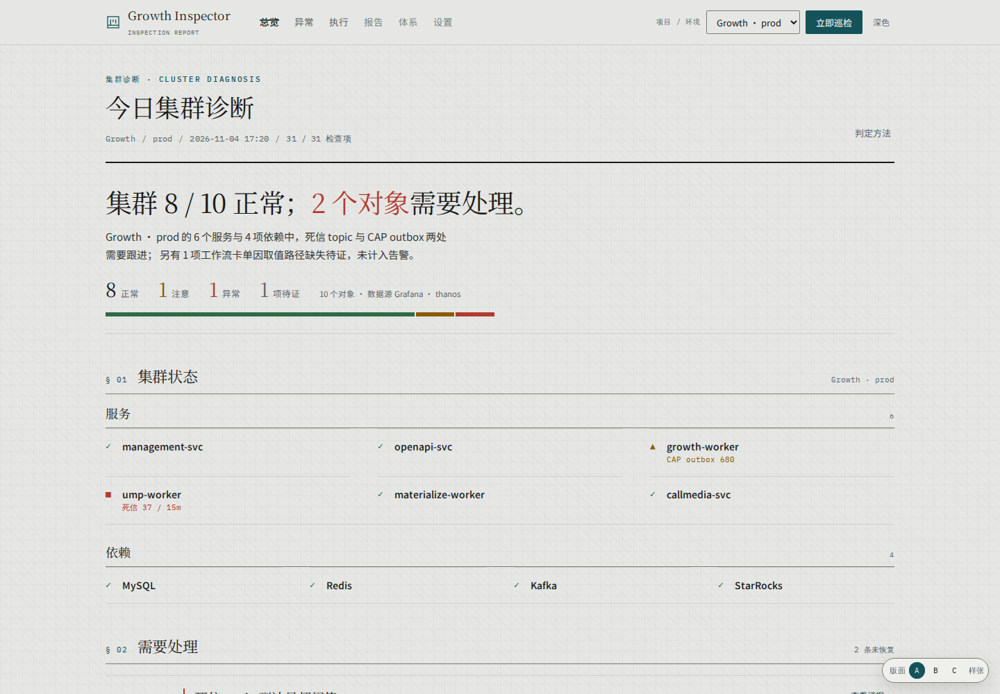
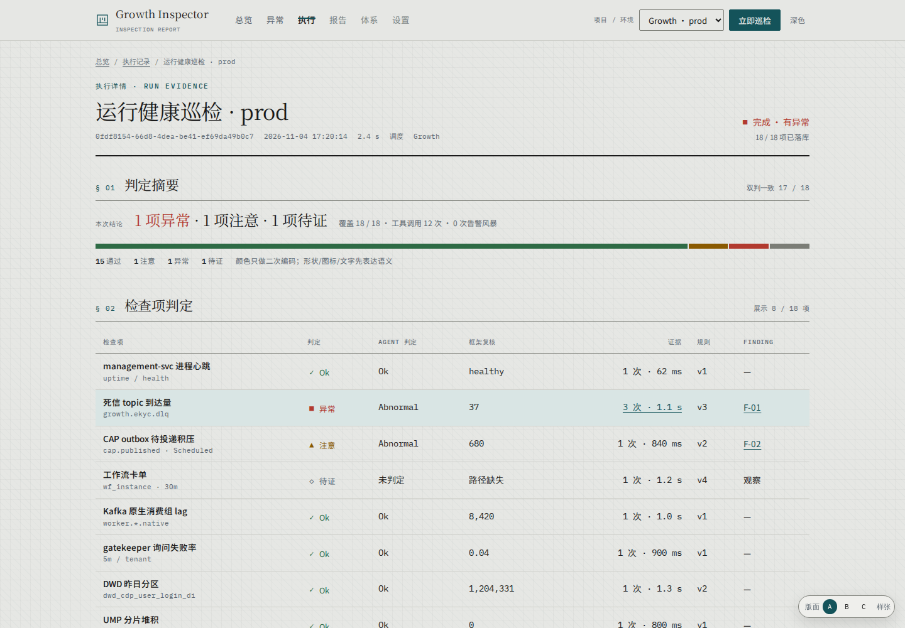
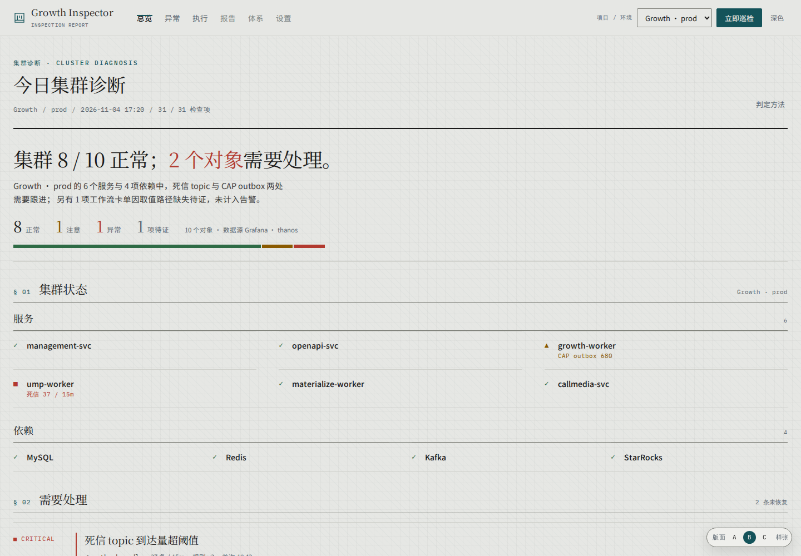
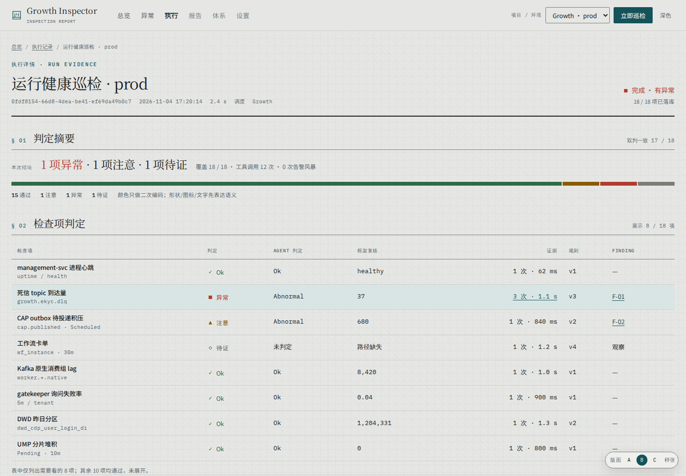
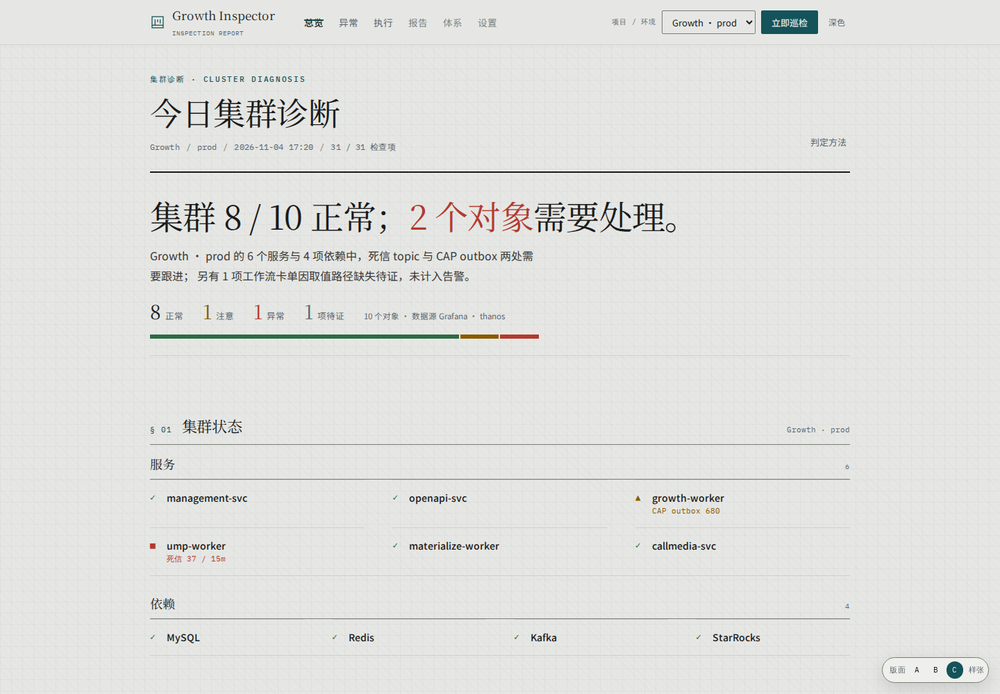
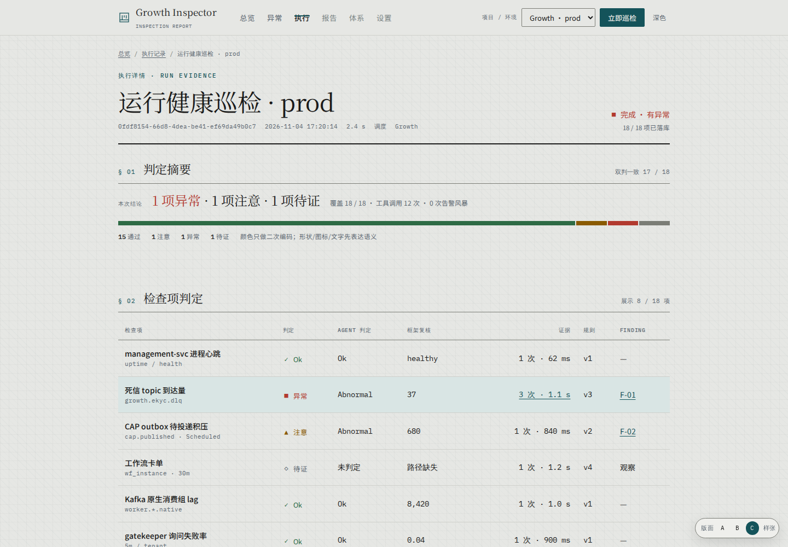

Layout comparison · 2026-11-04
同一页，三种版面。
同一套组件、同一份数据、同一主题；只改宽度、行高、章节间距。 上排总览，下排执行详情；点图可打开可交互的整页。
A
报告栏
1200 · 40px · 48px
内容 1200 / 视口 1440 · 居中

总览

执行详情 · 40px 行高
B
全宽
100% · 36px · 36px
内容 1440 / 视口 1440 · 边到边

总览

执行详情 · 36px 行高
C
留白 · 已选
1120 · 48px · 88px
内容 1120 / 视口 1440 · 居中

总览

执行详情 · 48px 行高
差异集中在：内容宽度（A 1200 / B 全宽 / C 1120）、表格行高（40 / 36 / 44）、章节间距（48 / 36 / 64）。 右上角可切深色；右下角 A/B/C 可在页面内切换。